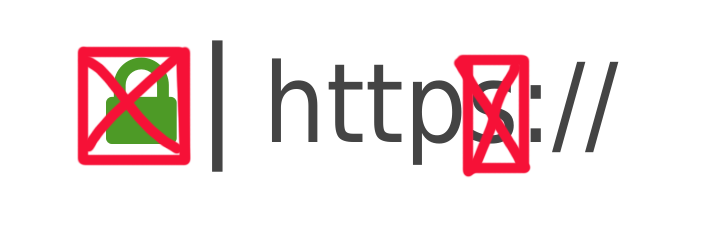

HTML står för HyperText Markup Language. HTML är den grundläggande byggstenen på webben. Alla hemsidor använder sig av någon form av HTML. Det är HTML som utgör strukturen för hemsidor.
HTML är ett märkspråk och därmed inget programmeringsspråk, eftersom HTML ej kan utföra kommandon. Det används alltså bara för att utföra strukturen.
HTML är standerden för hemsidor på WWW (World Wide Web)
HTML filer använder .html som extension
Vad är CSS?
CSS står för Cascading Style Sheets. CSS är också en av dom grundläggande byggstenarna på webben. CSS är en stilmall som är beronde av HTML. CSS används alltså för "styla" en sida. Få sidan att se bra ut!
CSS filer använder .css som extension
Element
"Element" är h1 tag i html, Denna h1 taggen är en av dom mest använda html elementen
Här ser du ett exempel på dom alla olika html headersen. Det finns h1 -> h6.
H2 rubriken är den mest vanliga att använda som underbrik
IMG TAG
Detta är img (bild) tag som också är väldigt vanlig i HTML. Bilder är något som används mycket inom webutveckling. Bilden ovanför i den gröna containern är inlagd via denna tagen
Paragraph
Denna texten du löser just nu ligger i HTML p taggen. P står för paragraph / paragraf. Detta är den du använder när du ska skriva innehållet i en te.x en artikel
Vad är en responsiv sida?
En responsiv sida använder sig utav i detta fallet media queries för att anpassa
hur sidan ska se ut på olika typer av enheter. Det är viktigt att anpassa sidan för så många olika enheter som möjligt detta,
för att alla som besöker sidan ska få en så bra upplevelse som möjligt. En av dom viktigaste sakerna med att göra en sida responsiv är att få den att fungera bra på mobiltelefoner.
Just ni använder vi oss utav Bootstrap som ska göra detta jobbet lättare för oss med redan massa för definerade media queries
Om du klickar på länken nedan kan du se hur denna sidan skulle se ut på en enhet med höjden 400px och bredden 500px, du kan även resiza sidan om du vill
Class attributen i HTML används för att klassificera element. Flera olika element kan använda sig utav samma Class och därmed få samma te.x style via css. Man kan tänka det som att du grupperar element
ID
ID atttributen I HTML används för att identifiera och styla ett element på sidan. ID måste vara unikt och ska bara användas på ett ställe tillskillnad från Class
Container-Fluid, Row och Col-SM
Gissar att du precis läst om Class och ID? I dessa tre kolummner använder vi oss utav av Class. Det tre klasser som är viktigast här är container-fluid, row och col-sm samt. Dessa tre klasser tillsammans skapar dessa fina rutor
META, Vad är det?
Meta är ett prefix i HTML, meta syns inte på sidan utan är något som påverkar hemsidans egenskaper. Meta ligger alltid inom HEAD! Metan kan tillexempel innehålla uppgifter till sökmotorerna, info om vem som skapat sidan, copyright, ladda om sidan efter ett visst antal sekunder mm
[OL - Orderd List]
Är en orderd list med nummer, tillskillnad från UL, se nedan
[UL - Unorderd List]
Är en unorderd lista utan nummer, bara punkter i detta fallet.

Vad är HTTP?
HTTP står för Hypertext Transfer Protocol och är en typ av kommunikationsprotokoll. Detta protokoll använder port 80. Kort sagt det HTTP gör är att överföra hemsidan från webservern till din dator.
Vad är HTTPS?
HTTPS står för Hypertext Transfer Protocol Secure och är också en typ av kommunikationsprotokoll. Detta protokoll använder port 443. HTTPS är för krypterad transport av HTTP protokollet.
Exempel på hur datan skickas
HTTP:
{ Namn: Bobbie Brandson,
Telefonnummer: 0701234567,
Meddelande: Detta är ett meddelande }
Komprimerad Data är när man har använt till exempel ett program som omkodar och tar bort bitar av låt oss säga en video du vill dela på internet. När sedan den andra personen laddar ner denna videon måste den också ha ett program som avkoda och lägga tillbaka det bitar som tagits bort. Exempel på komprimerade data är en .zip eller .rar fil!
Exempel på Skurlängdskodning (ett sätt att komprimera data)
Antag att vi bestämmer att kodtecknet ska vara 3. Sedan vill vi skurlängdskoda följande data:
1 2 2 2 2 5 5 5 5 5 5 1 1 1
Kodningen ger då utmatning:
1 3 2 4 3 5 6 3 1 3
Utmatningen avkodas på följande vis:
Tecknet 1, 1 i avkodningen. Tecknet 3, kodtecknet. Här börjar en upprepning... ...av tecknet 2... ...och det upprepas 4 gånger – avkodas alltså till 2222. o.s.v
Vad är CDN?
Med innehållsleveransnätverk (eller CDN, enligt engelskans Content Delivery Network) avses geografiskt utspridda nätverk av proxy-servrar och deras datorhallar. Avsikten med dessa nätverk är att tillhandahålla nättjänster nära användare, för ökad driftsäkerhet och prestanda samt minskad latens.
Local Bootsrap
Local Bootsrap är när du själv laddar ner Bootsrap på din webserver istället för att ladda in Bootsrap från deras sida. Denna sidan kör Bootsrap lokalt! Bootsrap filerna är alltså nerladda till ./css mappen.
jQuery
jQuery är ett javascript bibilotek som används för att förenkla HTML, DOM, och css modifikation för att snabbare kunna utveckla hemsidor.
Flexbox
Som man hör på namnet är flexbox till för att på ett flexibelt sätt hantera boxar, såväl deras position som deras storlek - vilket ju är likvärdigt med layout. Det är mycket enklare att få till en bra layout med denna teknik än om man använder sig av float eller liknande äldre metoder.
Flexboxar är dynamiska och webbläsaren sköter automatiskt det mesta som har att göra med placering av underelement. När man kör på olika enheter eller när man förändrar storlek på webbläsarfönstret så kommer flexbox att förändra layouten så att den passar den aktuella skärmlayouten.
Grid
Grid är som sagt ett nytt sätt att skapa layouts med CSS. Man kan med detta skapa en ”rutnäts”-baserad layout som byggs upp via kolumner och rader. Det innebär att man nu kan styla både vertikalt och horisontellt, på ett betydligt enklare sätt. En annan viktig del är att man kan ändra ordningen på sina objekt helt oberoende av ordningen i dokumentobjektmodellen (DOM). Man kan också kombinera Grid med exempelvis Flexbox och float om man skulle vilja. Sammanfattningsvis kan du, med hjälp av Grid, lättare bygga avancerade layouter.
Code Snippets
Code Snippets eller Snippets är en term för en del av kod som är återanvändbar. Det hjälper dig så du inte behöver skriva samma sak flera gånger. (Bilden visar tydligt)